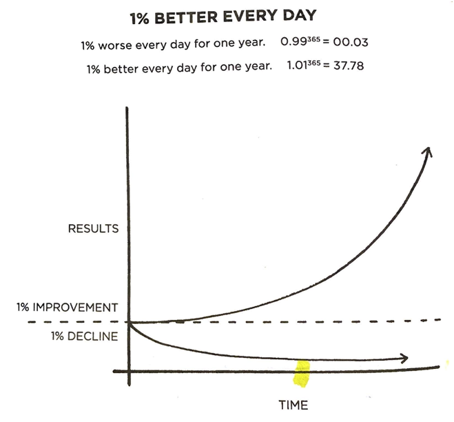
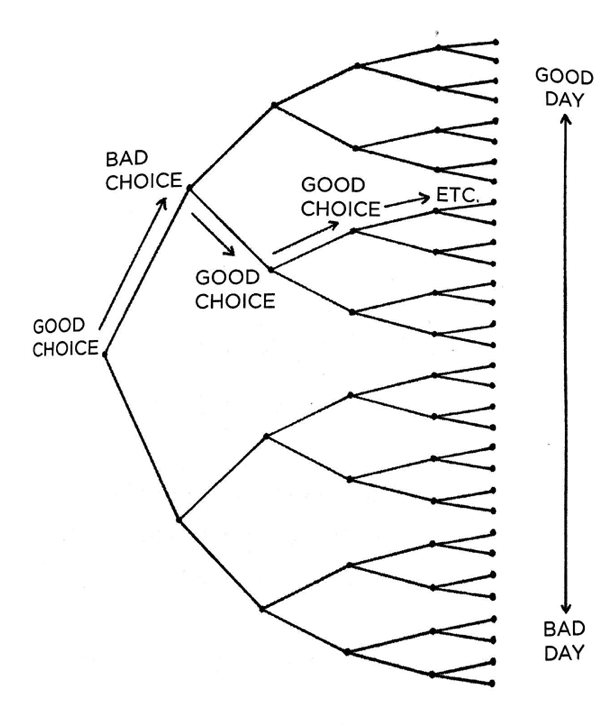
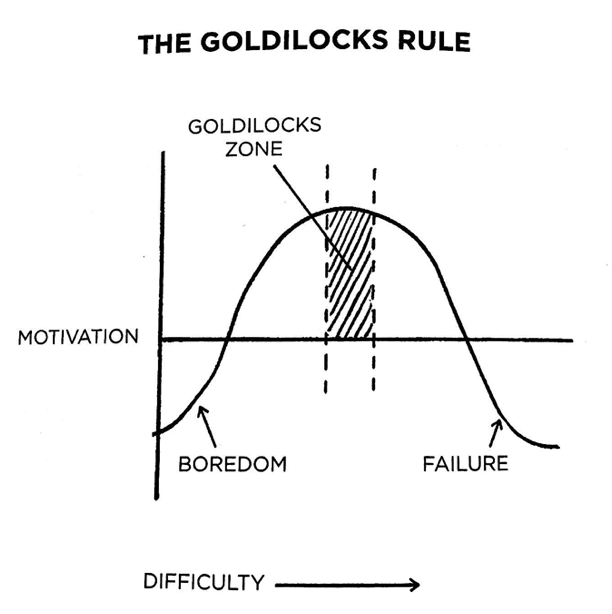

My personal notes for Atomic Habits
The Fundamentals
A habit is a routine that’s performed regularly, and often automatically.
Principle of Marginal Gains
Habits compound, combining small improvements into large changes. This is known as the principle of marginal gains. These changes are multiplicative, so even 1% improvements can add up to a large effect.
The opposite is also true. The accumulation of many small missteps aggregates to a large decline.
Small changes often appear to make no difference until you cross a critical threshold. The most powerful outcomes of any compounding process are delayed. You need to be patient.

Goals vs. Systems
The problem with outcomes is they’re a lagging measure of habits. In order to achieve a positive result, you have to consistently apply effort over time.
Goals have a few problems:
- Goals aren’t effective. People who fail at their New Year's resolutions had goals, but that didn’t change the outcome.
- A goal only represents a single moment. Even if you achieve a goal, once the moment has passed, it’s done.
- Goals interfere with happiness. By delaying good feelings until after you achieved your goals, you deny yourself satisfaction with progress along the way.
- Goals create yo-yo effects. Most people who reach their weight goal through dieting regain the weight later on. Focusing on an outcome doesn’t lead to long-term success.
Forget about setting goals and focus on creating systems instead.
Three Layers of Behavior Change
There are three levels at which any behavior change can occur.
- Outcomes: Changing your results.
- Process: Changing your habits and systems.
- Identity: Changing your beliefs—your worldview, self-image, or judgements.
You can either build outcome-based habits, which attempt to start backwards, or identity-based habits, which focus on who you wish to become.
What you do is an indication of the type of person you believe that you are—either consciously or unconsciously… Whne your behavior and your identity are fully aligned, you are no longer pursuing behavior change. You are simply acting like the type of person you already believe yourself to be.
The opposite is to walk around in a cognitive slumber, blindly following the norms attached to your existing identity.
Changing Your Identity
Your habits are how you embody your identity… Every action you take is a vote for the type of person you wish to become.
The trick is to first decide the person you want to be, and then prove it to yourself by applying your habits over and over.
How Habits Work
A habit is formed through four simple steps:
- Cue: This is what triggers your brain to perform a behavior.
- Craving: This is the motivation force that compels you to perform a habit.
- Response: This is the action you perform as part of the habit.
- Reward: The reward is the end goal of the habit. Rewards satisfy us and teach us.
These steps occur in a loop, and over time reinforce the behavior.
Four Laws of Behavior Change
The four laws correspond to the four steps of how a habit works.
Create a Good Habit
- Make it obvious
- Make it attractive
- Make it easy
- Make it satisfying
Break a Bad Habit
- Make it invisible
- Make it unattractive
- Make it difficult
- Make it unsatisfying
Make it Obvious
Habit Strategies
Sometimes, it can be difficult to start a new habit because we lack clarity. To help, there are a few strategies we can apply.
The first is by forming an implementation intention, which is a plan you make beforehand about when and where to act for a particular habit. The formula for an implementation intention is: I will [behavior] at [time] in [location].
The other is habit stacking, which is to identify a habit you already do every day, and then include a new behavior with it. The formula for this is: After I [current habit], I will [new habit].
Environment
Environment is the invisible hand that shapes human behavior. Despite our unique personalities, certain behaviors tend to arise again and again under certain environmental conditions.
You can design your environment for your own success by making the best choice the obvious one.
Be the designer of your world, and not merely the consumer of it.
When it comes to your environment, there are several things that can help install a habit.
- Find a new environment. “When you step outside your normal environment, you leave your behavioral biases behind. You aren’t battling old environmental queues, which allows new habits to form without interruption.”
- Redefine our rearrange your current environment. Rearrange your current environment into several spaces. “One space, one use.”
- Separate habits. Whenever possible, don’t mix the context of one habit with another.
Self-Control
Unhealthy behavior is not a moral weakness.
When scientists analyze people who appear to have tremendous self-control, it turns out those individuals aren’t all that different from those who are struggling. Instead, “disciplined” people are better at structuring their lives in a way that does not require herioc willpower and self-control. In other words, they spend less time in tempting situations.
The people with the best self-control are typically the ones who need to use it the least.
Autocatalysis
Bad habits are autocatalytic—the process feeds itself. A bad habit will continue to reinforce itself the more you do it.
This means that resisting temptation is a bad strategy in an environment that continues to reinforce it. Instead, it’s best to cut off habits at the source. Instead of making it obvious, make it invisible.
Make it Attractive
Supernormal Stimuli
Some stimuli, known as supernormal stimuli, are especially fine-tuned to make our brains “light up like a Christmas tree.” The perfect example is junk food, which is engineered to be incredibly compelling.
Society is filled with highly engineered version of reality that are more attractive than the world our ancestors evolved in.
…
These are the supernormal stimuli of our modern world. They eaggerate features that are naturally attractive to us, and our instincts go wild as a result, driving us into excessive shopping habits, social media habits, porn habits, eating habits and many others.
Dopamine
Habits are driven by dopamine. Scientists used to think dopamine was only released when experiencing pleasure, but we now know that dopamine is also released in anticipation of pleasure.
It is the anticipation of a reward—not the fulfillment of it—that gets us to take action.
Your brain has far more neural circuitry allocated for wanting rewards than for liking them.
Temptation Bundling
You can make a behavior more attractive if you combine it with one of your favorite things at the same time. This is known as temptation bundling, and like habit stacking, it also has a formula: After I [habit I need], I will [habit I want].
Social Influence
There are three groups we imitate when it comes to habits:
- The close: These are the people nearest you. One of the best ways to build a healthy habit is to join a culture where that behavior is the norm, and you already have something in common with the group.
- The many: It’s easy to fall into the same habit as the group. You can override this, but it’s difficult.
- The powerful: “We are drawn to behaviors that earn us respect, approval, admiration and status.”
Motives
Our behavior is heavily dependent on how we interpret the events that happen to us, not necessarily the objective reality of the events themselves.
The same cue can spark a good habit or a bad habit, depending on how we interpret it.
The specific cravings you feel and the habits you perform are really an attempt to address your fundamental underlying motives. When a habit successfully addresses a motive, you develop a craving to do it again.
You can flip your mindset with a simple trick: “You don’t ‘have’ to. You ‘get’ to.” It’s all about how you frame it.
Planning vs. Action
Planning is important, but doesn’t produce a result. Action produces results. While planning is important, it’s easy to fall into the trap of endlessly planning and never actually doing anything. Planing feels good, but after a certain point it can turn into procrastination.
$$ Quantity > Quality $$
When it comes to actions, you need to get your reps in. It’s better to do something imperfectly, but do it more. It’s only through practice that the habit will become automatic, allowing you to perform it without thinking.
Often, people focus on how long it takes to form a habit, but instead they should be asking how many it takes. “Your current habits have been internalized over the course of hundreds, if not thousands, of repetitions.”
Law of Least Effort
It is human nature to follow the Law of Least Effort, which states that when deciding between two similar options, people will naturally gravitate toward the option that requires the least amount of work.
In other words, people are motivated to do what’s easy. If you want to increase adoption of a habit, make it easy.
On the tough days, it’s crucial to have as many things working in your favor as possible so you can overcome the challenges that life naturally throws your way.
Trying to pump up your motivation to tackle difficult habits is a losing strategy. Instead, focusing on reducing friction for habits that you want to increase and increasing friction for habits you want to decrease.
One way to make habits easier is to prime your environment. This means completing the “preparation” steps of a habit ahead of time, so when it’s time to practice the habit, there are no barriers. Examples including setting out your workout clothes ahead of time, or prepping fruits and vegetables to make eating healthy easy.
Decisive Moments
Habits are like the entrance ramp to a highway. They lead you down a path and, before you know it, you’re speeding towards the next behavior.
Every day, there are a handful of moments that deliver an outsized impact. I refer to these little choices as decisive moments.

The difference between a good and a bad day is often a few healthy and product choices made at decisive moments. Each one is like a fork in the road, and these choices stack up throughout the day and can ultimately lead to very different outcomes.
Two-Minute Rule
Almost any habit can be scaled down to a two-minute version. The can let you transform any habit to “very easy”.
The point is not to “trick” yourself into doing more than you intended, it’s to master the habit of showing up. You can always scale up later, but only after showing up has become automatic.
Instead of trying to engineer a perfect habit from the start, do the easy thing on a more consistent basis.
Commitment Devices
Sometimes success is less about making good habits easy and more about making bad habits hard.
One way of doing this is by employing a commitment device, which is a choice you can make in the present that will “lock” in your future behavior. This can allow you to take advantage of good intentions in the moment before you can fall victim to temptation.
Often, there are one-time actions that make a good habit easier or a bad habit harder. These are powerful, because they allow you to spend a little effort to get a long-term benefit. Often, these can be implemented with technology. Always look for opportunities to make one-time choices.
Make It Satisfying
If you want to make a behavior stick, make it satisfying to perform.
Immediate vs. Delayed Rewards
The way our brains evaluate rewards is inconsistent across time. We prioritize immediate rewards. However, many healthy habits are unpleasant in the short term with long-term benefits, while many unhealthy habits are rewarding in the short-term with unpleasant consequences in the long-term.
Instant gratification usually wins. Our brains prioritize it.
What is immediately rewarded is repeated. What is immediately punished is avoided.
The best way to accomplish this is to add a little bit of immediate gratification to the habits we want to build, even if it’s just in a small way. Over time, the habit may be its own reward, but in the short term.
Habit Tracking
Research has shown that people who track their progress on habits like losing weight, quitting smoking and lowering blood pressure are more likely to improve than those who don’t. … The mere act of tracking a behavior can spark the urge to change it.
Habit tracking is obvious, attractive and satisfying. When possible, making tracking automatic (usually via technology). Manual tracking should be limited to your most important habits.
One approach to tacking habits is the Paper Clip Strategy. In this highly visible method, you take a jar and add something small to it, like a paper clip, penny or marble, every time you complete your habit. This simple approach can be highly effective, and can become its own reward.
There is one trap with habit tracking: it’s easy to fall into the trap of treating the measurement as the goal.
When a measure becomes a target, it ceases to be a good measure.
Recovery
It’s not usually possible to be perfectly consistent with a habit. Life is too chaotic and unpredictable.
It’s easy to fall into an all-or-none mentality with habits, but that doesn’t necessarily reflect reality. Missing one day doesn’t create a large impact, but missing many does. “The problem is not slipping up; the problem is thinking if you can’t do something perfectly, then you shouldn’t do it at all.
This leads to a simple rule: never miss twice. The miss is much less important than the day after the miss, which you can use to get back on track.
Another key is that doing something is better than doing nothing. If you don’t feel up to doing a working, doing two minutes of work still maintains the habits. With a system, we’re focusing on the long-term, not the day-to-day ups and downs.
Consequences
Pain is an effective teacher. If you can make a bad habit painful, you’re less likely to do it.
The best way I know to overcome [bad habits] is to increase the speed of the punishment associated with the behavior.
One effective strategy is to create a habit contract, which is an agreement in which you state your commitment to a particular habit and the punishment that will occur if you don’t follow through.
Another effective approach is to recruit an accountability partner. This is a person you know is watching if you slip up.
Tactics
Goldilocks Rule
The Goldilocks Rule states that humans experience peak motivation when working on tasks that are right on the edge of their current abilities. Not too hard. Not too easy. Just right.
The human brain loves a good challenge. Your want the difficulty level to be just manageable to maximize growth. If you hit this just right, you can achieve flow state.

Motivation
When it comes to training, the people at the top experience the same lack of motivation as the rest of us.
At some point, it comes down to who can handle the boredom of training every day, doing the same lifts over and over.
Professionals stick to the schedule; amateurs let life get in the way. Professions know what is important to them and work towards it with purpose; amateurs get pulled off course by the urgencies of life.
…
When a habit is truly important to you, you have to be willing to stick to it in any mood. Professionals take action even when the modd isn’t right. They might not enjoy it, but they find a way to put the reps in.
Mastery
Mastery is the process of narrowing your focus to a tiny element of success, repeating it until you have internalized the skill, and then using this new habit as the foundation to advance to the next frontier of your development.
In order to get there, it’s important to establish a system for reflection. Only by examining your mistakes can you consider new paths for improvement.
Success
Success is not a goal to reach or a finish line to cross. It is a system to improve, an endless process to refine.
…
This is a continuous process. There is not finish line. There is no permanent solution. Whenever you’re looking to improve, you can rotate through the four laws of behavior change until you find the next bottleneck.